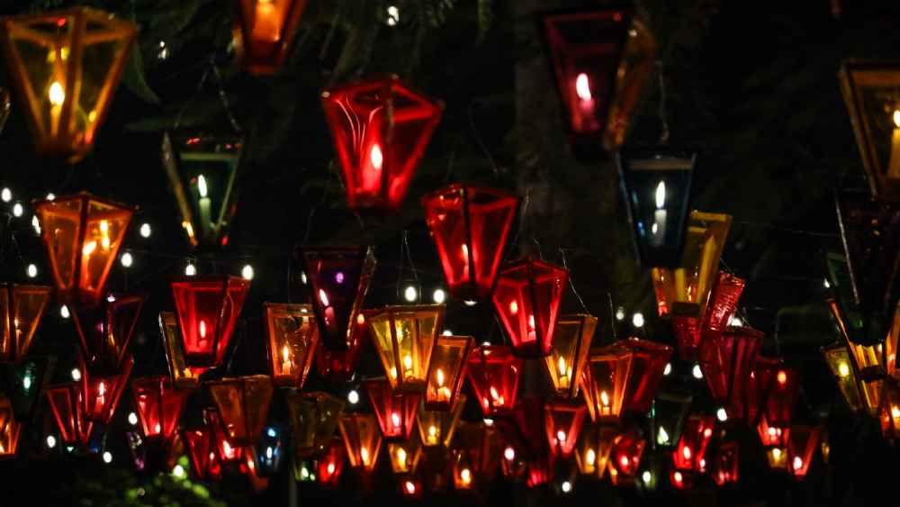
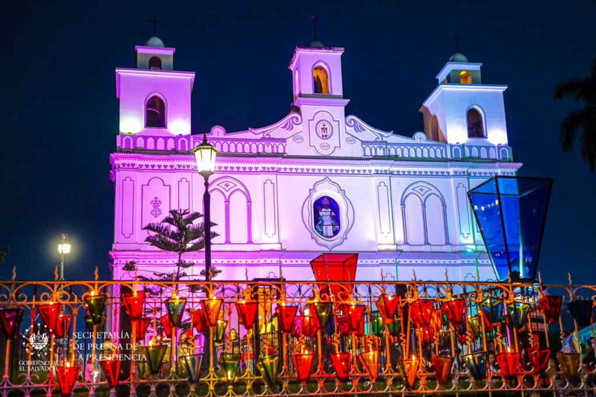
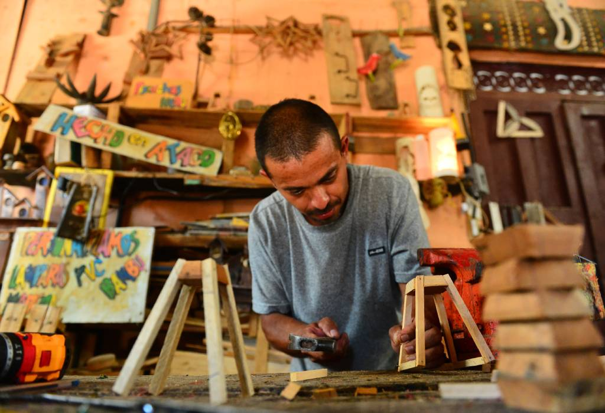
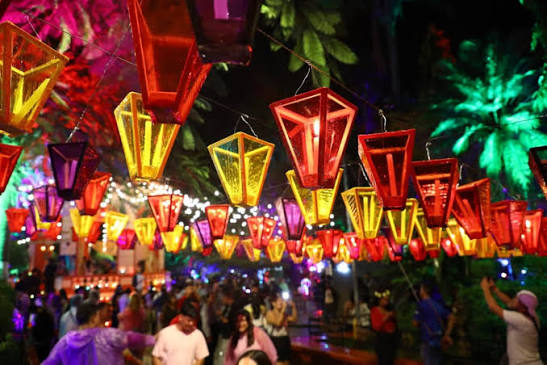
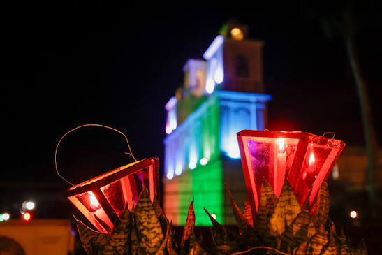

Calles iluminadas
Las calles y viviendas son decoradas con numerosos farolitos artesanales que iluminan la noche y crean un ambiente lleno de color.

El Festival de los Farolitos es una de las tradiciones culturales y religiosas más representativas de El Salvador. Su celebración principal se realiza el 7 de septiembre, especialmente en Ahuachapán.
Durante la celebración, las calles, casas y espacios públicos se llenan de miles de farolitos artesanales elaborados por familias y comunidades, creando un espectáculo lleno de luz, color y tradición.


Las calles y viviendas son decoradas con numerosos farolitos artesanales que iluminan la noche y crean un ambiente lleno de color.

Las familias elaboran farolitos utilizando materiales como madera y papel de colores, creando diferentes formas y diseños.
La celebración está relacionada con la víspera del nacimiento de la Virgen María y cuenta con actividades religiosas, procesiones y misas.
Es uno de los principales lugares donde se celebra esta tradición, llenando sus calles de luz y color.

Sus calles empedradas y fachadas decoradas crean un escenario especial durante la celebración.

Otro de los destinos de la Ruta de las Flores donde se realizan actividades culturales y religiosas durante el festival.
Elige el día del evento, selecciona una tour operadora, un guía o el transporte, indica el número de personas y agrega tu reserva al carrito.
La celebración principal se realiza el 7 de septiembre, con las calles y casas llenas de farolitos al caer la noche.
Recorrido guiado por las calles iluminadas de Ahuachapán durante la noche del festival.
$20 por persona
Aprende con una familia local cómo se elaboran los farolitos con madera y papel de colores.
$25 por persona
Visita a Concepción de Ataco y Apaneca para ver cómo se vive la celebración en la Ruta de las Flores.
$35 por persona
Acompañamiento local durante la noche del festival.
Explicación del vínculo con la víspera del nacimiento de la Virgen María y de las procesiones y misas del día.
$25 por grupo
Ideal para visitantes extranjeros. Explicaciones en dos idiomas durante todo el recorrido.
$40 por grupo
Te lleva a los mejores puntos para fotografiar los farolitos y las calles iluminadas.
$40 por grupo
Llega al occidente del país y regresa de noche sin preocuparte por manejar.

Viaje de ida y vuelta a Ahuachapán, con salida por la tarde y regreso al terminar la celebración.
$12 por persona

Vehículo con conductor disponible durante la tarde y la noche para moverte entre los pueblos.
$50 por vehículo

Para familias grandes, parroquias o grupos de amigos. Reserva con anticipación.
$130 por vehículo